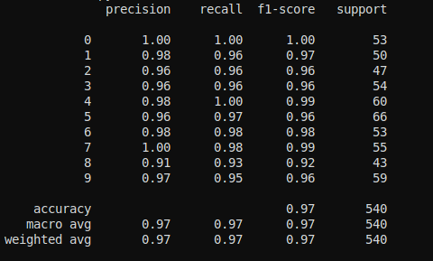
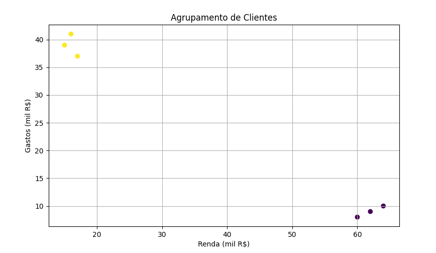
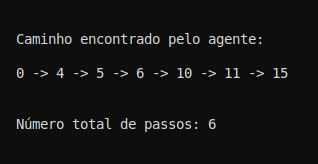

2. Projetos em Aprendizado de Máquina
Este documento detalha os projetos desenvolvidos para o portfólio de Aprendizado de Máquina da disciplina de Inteligência Artificial, ilustrando as principais abordagens de aprendizado de máquina. Cada projeto visa conectar a teoria apresentada em sala de aula e no livro-texto com implementações práticas, demonstrando a aplicação dos conceitos na resolução de problemas específicos.
Com base na perspectiva de Russell & Norvig (2010), a Inteligência Artificial é o estudo de agentes que percebem o ambiente e realizam ações racionais para atingir seus objetivos. Assim, o Aprendizado de Máquina aparece como uma ferramenta essencial para permitir que os agentes se adaptem a ambientes desconhecidos ou dinâmicos. Ao aprender com dados e experiências, esses agentes são capazes de melhorar seu desempenho ao longo do tempo sem a necessidade de reprogramação explícita.
Os projetos a seguir exemplificam três paradigmas principais do aprendizado de máquina: supervisionado, não supervisionado e por reforço. A proposta é entender como essas abordagens ajudam um agente a perceber, decidir e agir de forma mais inteligente frente a diferentes desafios.
1. Classificação de Dígitos com Aprendizado Supervisionado
Objetivo
Treinar um modelo de classificação para reconhecer dígitos manuscritos do dataset MNIST, utilizando uma Rede Neural Multicamadas (MLP).
Contexto Teórico
Esta tarefa representa um problema perceptivo importante para um agente racional. A classificação de dígitos transforma entradas sensoriais (imagens) em informações simbólicas úteis (números), que poderiam ser utilizadas por agentes mais complexos. O ambiente é totalmente observável e determinístico no sentido de que a entrada estática não muda. Entretanto, há incertezas relacionadas às variações nas escritas.
Conceito
O aprendizado supervisionado envolve treinar um modelo com exemplos rotulados. O modelo aprende a mapear entradas (pixels) em saídas (dígitos), com base em feedback sobre erros.
Código
from sklearn.datasets import load_digits
from sklearn.model_selection import train_test_split
from sklearn.neural_network import MLPClassifier
from sklearn.metrics import classification_report
# Carrega dados
digits = load_digits()
X_train, X_test, y_train, y_test = train_test_split(
digits.data, digits.target, test_size=0.3, random_state=42
)
# Treina modelo
mlp = MLPClassifier(hidden_layer_sizes=(64,), max_iter=300, random_state=1)
mlp.fit(X_train, y_train)
# Avalia desempenho
y_pred = mlp.predict(X_test)
print(classification_report(y_test, y_pred))
Comentários
O MLP é eficaz por sua capacidade de modelar relações complexas e não lineares. No entanto, apresenta limitações como alto custo computacional, necessidade de muitos dados rotulados e pouca interpretabilidade. Para melhorar, redes convolucionais (CNNs) poderiam ser utilizadas.

Figura 1: Exemplo de classificação de dígitos manuscritos utilizando Rede Neural Multicamadas (MLP).
2. Agrupamento de Clientes com Aprendizado Não Supervisionado
Objetivo
Agrupar clientes com base em dados de consumo usando K-Means. O objetivo é identificar padrões de comportamento.
Contexto Teórico
Neste caso, não há agente racional direto, mas sim uma ferramenta de análise que auxilia agentes (humanos ou sistemas automatizados) a entenderem melhor seu ambiente. O ambiente é observável, mas os padrões são desconhecidos — e é justamente isso que o modelo tenta descobrir.
Conceito
Aprendizado não supervisionado lida com dados sem rótulos. O modelo tenta encontrar estrutura nos dados, agrupando-os por similaridade.
Código
import pandas as pd
from sklearn.cluster import KMeans
import matplotlib.pyplot as plt
# Dados fictícios de clientes
data = {'Renda': [15, 16, 17, 60, 62, 64],
'Gastos': [39, 41, 37, 8, 9, 10]}
df = pd.DataFrame(data)
# Aplica K-Means
kmeans = KMeans(n_clusters=2, random_state=0).fit(df)
df['Grupo'] = kmeans.labels_
# Visualiza resultado
plt.scatter(df['Renda'], df['Gastos'], c=df['Grupo'], cmap='viridis')
plt.xlabel('Renda (mil R$)')
plt.ylabel('Gastos (mil R$)')
plt.title('Agrupamento de Clientes')
plt.grid(True)
plt.show()
Comentários
K-Means é simples e eficiente, mas sensível à inicialização e exige que o número de clusters seja definido previamente. Ele também assume que os grupos são esféricos e balanceados, o que nem sempre é verdade. Métodos como DBSCAN ou Gaussian Mixture Models podem oferecer melhores resultados em cenários mais complexos.

Figura 2: Visualização do agrupamento dos clientes em dois grupos, obtido por meio do algoritmo K-Means, com base nas variáveis renda e gastos.
3. Navegação com Aprendizado por Reforço (Q-Learning)
Objetivo
Ensinar um agente a encontrar o caminho mais curto em um labirinto simples usando Q-Learning.
Contexto Teórico
Aqui temos um agente racional em sua essência. Ele interage com um ambiente dinâmico e busca maximizar uma função de recompensa, sem conhecimento prévio do modelo de transição. O ambiente é totalmente observável, mas pode ser estocástico e complexo.
Conceito
No aprendizado por reforço, o agente aprende com tentativa e erro, ajustando sua política com base nas recompensas recebidas ao longo do tempo.
Código
import numpy as np
import random
# Ambiente 4x4
n_states = 16
actions = ['up', 'down', 'left', 'right']
q_table = np.zeros((n_states, len(actions)))
rewards = np.full(n_states, -1)
rewards[15] = 10 # Estado final com recompensa positiva
def get_next_state(state, action):
row, col = divmod(state, 4)
if action == 'up' and row > 0:
row -= 1
elif action == 'down' and row < 3:
row += 1
elif action == 'left' and col > 0:
col -= 1
elif action == 'right' and col < 3:
col += 1
return row * 4 + col
# Q-Learning
alpha = 0.1
gamma = 0.9
epsilon = 0.1
episodes = 500
for _ in range(episodes):
state = 0
while state != 15:
if random.uniform(0, 1) < epsilon:
action_idx = random.randint(0, 3)
else:
action_idx = np.argmax(q_table[state])
next_state = get_next_state(state, actions[action_idx])
reward = rewards[next_state]
old_value = q_table[state, action_idx]
next_max = np.max(q_table[next_state])
q_table[state, action_idx] = old_value + alpha * (reward + gamma * next_max - old_value)
state = next_state
# Caminho aprendido
state = 0
path = [state]
while state != 15:
action_idx = np.argmax(q_table[state])
state = get_next_state(state, actions[action_idx])
path.append(state)
print("\n\nCaminho encontrado pelo agente:\n")
print(" -> ".join(map(str, path)))
print(f"\n\nNúmero total de passos: {len(path) - 1}\n\n")
Comentários
O Q-Learning é eficiente para ambientes discretos e pequenos, mas escala mal para ambientes contínuos ou muito grandes. O uso de redes neurais para estimar a função Q (como no Deep Q-Learning) e técnicas de exploração mais sofisticadas são alternativas viáveis para superar essas limitações.

Figura 3: Representação do ambiente do labirinto 4x4 utilizado no projeto de Q-Learning, onde o agente aprende a navegar até o estado objetivo com base em recompensas.
Considerações Finais
Esses três projetos me ajudaram a entender de forma prática os principais paradigmas do aprendizado de máquina e como eles se conectam com os conceitos de agentes inteligentes descritos por Russell & Norvig. Cada modelo tem seu propósito, suas forças e suas limitações, e juntos oferecem uma base sólida para construir sistemas mais complexos e adaptativos. Como estudante de graduação, ver esses algoritmos funcionando me deu uma noção concreta do que significa "aprender a partir da experiência" — algo que antes parecia abstrato nos livros. Pretendo aprofundar meus estudos em aprendizado por reforço e em redes neurais mais avançadas, pois vejo nelas um grande potencial para aplicações reais que envolvem tomada de decisão autônoma.
Referências
MARSLAND, Stephen. Machine Learning: An Algorithmic Perspective. 2. ed. Boca Raton: Chapman & Hall/CRC, 2014.
RUSSELL, Stuart J.; NORVIG, Peter. Artificial Intelligence: A Modern Approach. 3. ed. Upper Saddle River: Pearson Education, Inc., 2010.
SOARES, Fabiano. FGA0221 – IA - 21.pdf. [Material de aula]. [s.l.]: [s.n.], [2025?].
SOARES, Fabiano. FGA0221 – IA - 24.pdf. [Material de aula]. [s.l.]: [s.n.], [2025?].
SOARES, Fabiano. FGA0221 – IA - 25.pdf. [Material de aula]. [s.l.]: [s.n.], [2025?].
SOARES, Fabiano. Performace_Test.py. [Código fonte]. [s.l.]: [s.n.], [2025?].
SOARES, Fabiano. XOR_Gate_NN.py. [Código fonte]. [s.l.]: [s.n.], [2025?].
SOARES, Fabiano. XOR_Gate_NN_V2.py. [Código fonte]. [s.l.]: [s.n.], [2025?].
SOARES, Fabiano. Unsupervised_Learning_example_01.py. [Código fonte]. [s.l.]: [s.n.], [2025?].
| Versão | Data | Modificação | Nome | GitHub |
|---|---|---|---|---|
1.1 |
28/07/2025 | Explicações teóricas e considerações finais adicionadas | Ana Beatriz Norberto | @ananorberto |